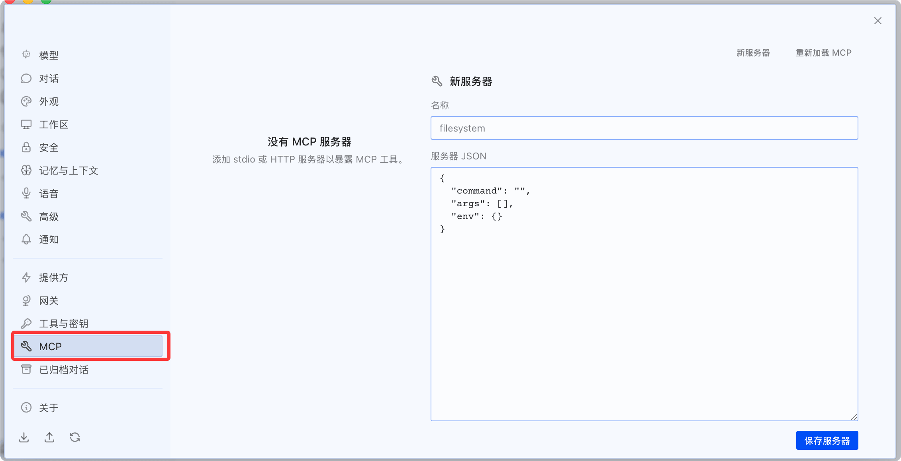
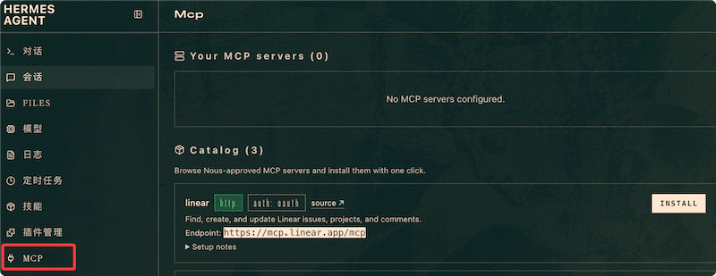

Hermes Agent MCP 集成
MCP（Model Context Protocol）是 Anthropic 提出的开放协议，用于标准化 LLM 与外部工具的交互。
Hermes 原生支持 MCP，无需修改核心代码就能接入 GitHub、数据库、文件系统、浏览器堆栈、内部 API 等任何 MCP 兼容服务。
本章将深入 MCP 的两种接入方式、工具过滤策略、安全隔离机制以及常见问题排查。
什么是 MCP
MCP 解决了一个实际问题：每接入一个新服务，传统做法需要写适配代码、定义工具 Schema、处理认证——每个服务都是一次性工作。
MCP 把这些标准化了。任何实现 MCP 协议的服务，Hermes 都能直接接入，无需额外开发。
MCP 的核心角色：
Hermes Agent（MCP 客户端）
│
├── stdio ──→ MCP 服务器 A（本地子进程）
│ └── 暴露工具：git_commit, git_push...
│
├── HTTP ───→ MCP 服务器 B（远程服务）
│ └── 暴露工具：list_issues, create_issue...
│
└── HTTP ───→ MCP 服务器 C（远程 OAuth）
└── 暴露工具：search_docs, create_page...
标准安装已包含 MCP 支持，无需额外步骤。所有 MCP 服务器在~/.hermes/config.yaml中统一配置。
MCP 不是 Hermes 的专有协议——它是开放的。为其他支持 MCP 的工具编写的服务器（如 Claude Code 的 MCP 服务器）可以直接在 Hermes 中使用，反之亦然。
两种 MCP 服务器类型
本地 stdio 服务器
以子进程形式在本地运行，通过标准输入/输出（stdin/stdout）与 Hermes 通信。
通信使用 JSON-RPC 协议，每条消息以换行符分隔。
适用场景：工具已本地安装，需要低延迟访问本地资源（文件系统、Git 仓库、本地数据库）。
实例
# MCP stdio 服务器配置
mcp_servers:
# GitHub 服务器：通过 npx 启动
github:
command: "npx"
args: ["-y", "@modelcontextprotocol/server-github"]
env:
GITHUB_PERSONAL_ACCESS_TOKEN: "ghp_..."
# 文件系统服务器：限制 Agent 的访问范围
filesystem:
command: "npx"
args:
- "-y"
- "@modelcontextprotocol/server-filesystem"
- "/home/user/projects" # 只允许访问此目录
# Git 服务器：通过 uvx 启动
git:
command: "uvx"
args:
- "mcp-server-git"
- "--repository"
- "/home/user/project"
stdio 服务器的生命周期由 Hermes 管理：
- 会话启动或
/reload-mcp时，Hermes 启动子进程 - 会话结束或禁用服务器时，Hermes 终止子进程
- 子进程崩溃会自动重启（最多重试 3 次）
远程 HTTP 服务器
通过 HTTP 请求直接连接远程 MCP 端点，支持多种认证方式。
适用场景：工具在远端托管，或组织内部已有 MCP 接口。
实例
# MCP HTTP 服务器配置
mcp_servers:
# 方式一：静态 Bearer Token 认证
internal_api:
url: "https://mcp.internal.example.com/mcp"
headers:
Authorization: "Bearer ${MY_TOKEN}" # 支持环境变量
# 方式二：OAuth 2.1 认证（Linear、Sentry、Figma、Stripe 等）
linear:
url: "https://mcp.linear.app/mcp"
auth: oauth
# 方式三：需要预注册 OAuth 客户端的提供商
googledrive:
url: "https://drivemcp.googleapis.com/mcp/v1"
auth: oauth
oauth:
client_id: "<your-oauth-client-id>" # 预注册获取
client_secret: "<your-oauth-client-secret>"
两种类型对比
| 维度 | stdio 服务器 | HTTP 服务器 |
|---|---|---|
| 运行位置 | 本机（子进程） | 远程（独立服务） |
| 通信方式 | stdin/stdout + JSON-RPC | HTTP 请求 |
| 生命周期 | Hermes 管理启停 | 独立于 Hermes |
| 延迟 | 极低（进程内通信） | 取决于网络延迟 |
| 认证 | 环境变量传递 | Bearer Token / OAuth 2.1 |
| 典型场景 | 本地 Git、文件系统、数据库 | GitHub API、Linear、Sentry |
| 配置复杂度 | 低（一行 command） | 中（需配置 URL + 认证） |
Nous 精选 MCP 目录
Hermes 内置了一个经 Nous Research 审核的 MCP 目录，提供一键安装体验。
浏览与安装
打开交互式选择器（TUI），浏览所有目录条目:
hermes mcp
其他命令：
# 纯文本列表（适合脚本化） hermes mcp catalog # 按名称一键安装 hermes mcp install n8n hermes mcp install github hermes mcp install linear
交互式选择器显示每个条目的当前状态：
n8n available 管理和检查 n8n 工作流 linear enabled Linear 问题/项目管理（远程 OAuth） github installed (disabled) GitHub 仓库 + PR 工具 filesystem installed (enabled) 安全的文件系统操作 postgres available PostgreSQL 数据库查询 slack available Slack 消息和频道管理
状态说明：
| 状态 | 含义 |
|---|---|
| available | 可安装，尚未安装 |
| installed (enabled) | 已安装且已启用，Agent 可以使用 |
| installed (disabled) | 已安装但已禁用，Agent 不可使用 |
| enabled | 远程 OAuth 服务器，已授权启用 |
桌面版在设置菜单中查看配置：

仪表盘在左侧 MCP 菜单查看配置：

安装过程发生了什么
一键安装自动完成三步：
- 配置引导：提示填写 API Key 或引导 OAuth 浏览器授权流程
- 工具探测：连接服务器，获取其暴露的完整工具列表
- 工具选择：展示工具清单让你勾选要启用的工具（默认全选）
第三步（工具选择）是重要的安全环节——不是每个工具你都需要。比如 GitHub 服务器暴露了 delete_repo，如果你不需要，可以取消勾选。
工具过滤：只暴露你需要的
每个 MCP 服务器都支持精细的工具过滤。这是减少 Agent 攻击面的关键安全机制。
include 模式（白名单）
只注册列表中的工具，其余全部排除：
实例
# include 白名单模式——最安全的选择
mcp_servers:
github:
command: "npx"
args: ["-y", "@modelcontextprotocol/server-github"]
env:
GITHUB_PERSONAL_ACCESS_TOKEN: "ghp_..."
tools:
include:
- list_issues
- create_issue
- update_issue
- search_code
# 这 4 个之外的任何工具都不会注册
exclude 模式（黑名单）
排除列表中的工具，其余全部注册：
实例
# exclude 黑名单模式——排除高风险操作
mcp_servers:
stripe:
url: "https://mcp.stripe.com"
headers:
Authorization: "Bearer ${STRIPE_KEY}"
tools:
exclude:
- delete_customer
- refund_payment
- create_live_key
# 这 3 个之外的任何工具都会注册
过滤规则优先级
| 配置 | 行为 | 适用场景 |
|---|---|---|
| 仅 include | 只注册 include 列表中的工具 | 安全优先，最小权限原则 |
| 仅 exclude | 注册全部工具，排除 exclude 列表 | 方便优先，排除少数高风险操作 |
| 两者都设置 | include 优先，exclude 被忽略 | — |
| 两者都不设置 | 注册服务器暴露的所有工具 | 完全信任该 MCP 服务器 |
关闭资源和提示词
MCP 服务器除了工具，还可能暴露资源和提示词（Prompts）。如果不需要，可以关闭：
实例
# 在平台配置中引用 MCP 工具集
platform_toolsets:
cli:
- hermes-cli
- file
- terminal
- mcp-github # GitHub MCP 工具
- mcp-linear # Linear MCP 工具
telegram:
- hermes-gateway
- mcp-github # Telegram 上也启用 GitHub 工具
discord:
- hermes-gateway
# Discord 上不启用 GitHub 工具（安全策略）
MCP 环境变量隔离
这是 Hermes 的 MCP 安全机制中最容易被忽略但最重要的设计。
MCP stdio 子进程接收一个经过过滤的环境，默认只传递以下变量：
PATH, HOME, USER, LANG, LC_ALL, TERM, SHELL, TMPDIR 以及所有 XDG_* 变量
其他所有环境变量（API Key、Token、密码）都被屏蔽。
只有在 MCP 服务器配置的env:块中显式声明的变量才会传入子进程：
实例
GITHUB_PERSONAL_ACCESS_TOKEN: "ghp_..." # 只有这一个变量传入
# 即使你在 Shell 中 export 了 GITHUB_TOKEN，
# 没有在这里声明就不会传入 MCP 子进程
为什么这样设计？假设你在 .env 中存了 10 个 API Key（OpenAI、Anthropic、SerpAPI、Telegram Bot Token...）。如果 MCP 服务器能读取所有环境变量，一个恶意的 MCP 服务器工具就可以窃取所有凭据。环境变量隔离确保它只能看到显式声明的那个。
错误信息自动脱敏
MCP 工具的错误信息在返回给 LLM 前会自动脱敏——敏感信息（API Key、Token、密码）替换为[REDACTED]。
这防止了 Agent 在分析错误时意外看到明文凭据。
手动添加 MCP 服务器
除了从 Nous 目录一键安装，你也可以手动添加任何 MCP 兼容服务器。
实例
hermes mcp add my-git-server \
--command "uvx" \
--args "mcp-server-git,--repository,/home/user/project"
# 手动添加 HTTP 服务器
hermes mcp add internal-db \
--url "https://mcp.internal.example.com/db" \
--header "Authorization: Bearer ${DB_TOKEN}"
# 测试连接是否正常
hermes mcp test my-git-server
# 配置工具过滤
hermes mcp configure my-git-server
hermes mcp configure会打开交互式工具选择界面，让你重新勾选要启用的工具。
重新加载 MCP 配置
修改了 config.yaml 中的 MCP 配置后，无需重启整个 Agent：
实例
hermes mcp # 交互式目录选择器（TUI）
hermes mcp catalog # 纯文本目录列表
hermes mcp install <name> # 从目录一键安装
# ─── 手动管理 ───────────────────────────────────────────────
hermes mcp add <name> --command <cmd> --args <...> # 添加 stdio 服务器
hermes mcp add <name> --url <url> # 添加 HTTP 服务器
hermes mcp remove <name> # 移除服务器配置
hermes mcp list # 列出所有已配置服务器
hermes mcp test <name> # 测试服务器连接
hermes mcp configure <name> # 重新选择启用的工具
# ─── OAuth 认证 ─────────────────────────────────────────────
hermes mcp login <server> # 启动 OAuth 授权（最长等 5 分钟）
# ─── 运行时操作 ─────────────────────────────────────────────
/reload-mcp # 会话内重新加载 MCP 配置
hermes mcp reload # 命令行重新加载
常见问题排查
| 问题 | 可能原因 | 解决方案 |
|---|---|---|
| MCP 工具不出现 | 服务器未启用或连接失败 | 运行 hermes mcp list 检查状态，hermes mcp test 测试连接 |
| 工具过滤不生效 | 使用了 Hermes 注册后的工具名 | 改用 MCP 原始工具名（含连字符，如 list-issues 而非 list_issues） |
| stdio 服务器频繁崩溃 | 依赖缺失或权限不足 | 检查 command 是否在 PATH 中，手动运行测试 |
| OAuth 授权超时 | /reload-mcp 的 30 秒不够 | 先 hermes mcp login，完成后再 /reload-mcp |
| 环境变量不生效 | 未在 env: 块中显式声明 | 在 mcp_servers.<name>.env 中声明，不要依赖 Shell 环境变量 |
| HTTP 服务器连接拒绝 | URL 不可达或认证失败 | 检查 URL 和 Authorization header，确认网络连通 |
点我分享笔记
<p style="font-size:14px;">笔记需要是本篇文章的内容扩展！</p><br> <p style="font-size:12px;"><a href="../tougao.html" target="_blank">文章投稿，可点击这里</a></p> <p style="font-size:14px;"><a href="../w3cnote/runoob-user-test-intro.html" target="_blank">注册邀请码获取方式</a></p> <h3 class="text-muted"><i class="fa fa-info-circle" aria-hidden="true"></i> 分享笔记前必须<a href=";.html" class="runoob-pop">登录</a>！</h3> <p><a href="../w3cnote/runoob-user-test-intro.html" target="_blank">注册邀请码获取方式</a></p>